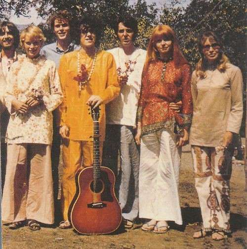
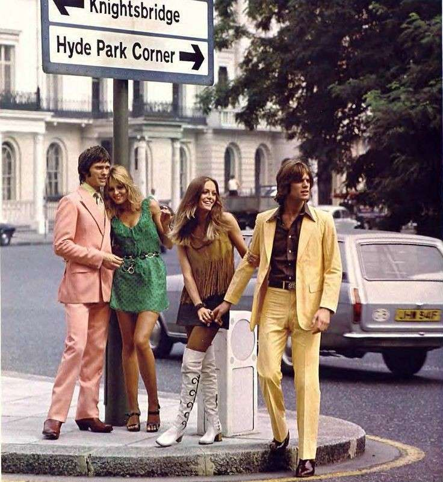
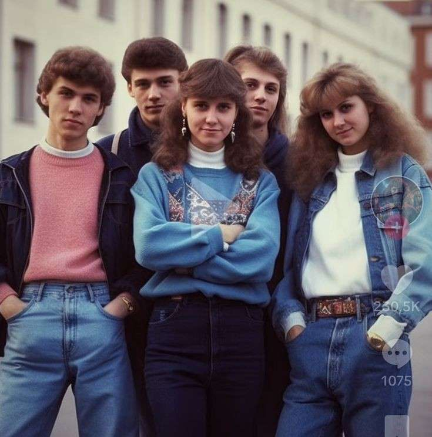

În anii 1960, moda a reflectat revoluțiile culturale și sociale ale vremii, devenind mai experimentale și diverse. La începutul deceniului, stilul "mod" a adus rochii mini, culori vibrante și modele geometrice, popularizate de designeri precum Mary Quant. Tinerii purtau jachete slim-fit și pantaloni strâmți, iar coafurile erau scurte și structurate. Mișcarea hippie a introdus o estetică relaxată și boemă, cu haine largi, imprimeuri florale și materiale naturale. Accesoriile includeau bandane, mărgele și sandale. Moda masculină a variat de la costume slim-fit și cămăși vibrante la stiluri hippie, cu păr lung și haine mai largi. În ansamblu, moda anilor 1960 a fost caracterizată de inovație, diversitate și reflectarea spiritului liber al deceniului.
În anii 1970, moda a fost definită de diversitate și experimentare, reflectând schimbările sociale și culturale ale vremii. Stilurile vestimentare au variat de la glamourul disco la influențele boeme și punk. Stilul disco, popular la mijlocul și sfârșitul deceniului, era caracterizat de haine strălucitoare, paiete și materiale sintetice. Femeile purtau rochii strălucitoare, salopete și platforme înalte, iar bărbații optau pentru costume strălucitoare, cămăși cu guler larg și pantofi cu platformă. Moda boemă a continuat să fie influentă, cu haine largi, imprimeuri etnice și naturale, și accesorii precum eșarfe și mărgele. Rochiile maxi, tunicile și fustele lungi erau populare printre femei, iar bărbații purtau adesea cămăși largi și pantaloni evazați. Stilul punk a apărut spre sfârșitul deceniului, promovat de muzicieni și mișcări contraculturale. Acesta era caracterizat de haine rupte, piele, ținte și un aspect neconformist. Coafurile erau adesea vopsite în culori vibrante și stilizate în forme îndrăznețe. În ansamblu, moda anilor 1970 a fost marcată de un amestec de influențe și stiluri, reflectând spiritul de libertate și rebeliune al vremii.
În anii 1980, moda a fost o explozie de creativitate și exuberanță, reflectând spiritul epocii. Stilul "power dressing" era emblematic pentru femei, cu costume cu umeri proeminenți și culori puternice, simbolizând forța și determinarea lor în mediul profesional. Pentru hainele casual, culorile neon și materialele sintetice erau la ordinea zilei, împreună cu imprimeuri îndrăznețe și accesorii supradimensionate. Cultura pop a influențat moda într-un mod semnificativ, cu muzicieni precum Madonna și Michael Jackson dictând tendințele în materie de vestimentație și coafuri. În moda masculină, costumele cu croieli îndrăznețe și blugii strâmți erau la modă, completându-se cu accesorii precum cravatele largi și ochelarii de soare mari. În ansamblu, moda anilor 1980 a fost o reprezentare a individualității și originalității, fiind caracterizată de un amestec de stiluri îndrăznețe și nonconformiste.
